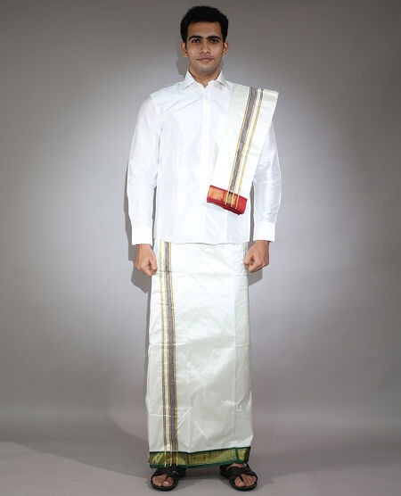

Dhoti and Pancha:
In Andhra Pradesh, males dress in dhotis and panchas. A long, rectangular garment called a dhoti is often composed of silk, cotton, or a combination of fabrics. It encircles the legs and waist, protecting the lower body. The Pancha is a small piece of cloth wrapped around the upper torso or put over the shoulder to add elegance to the clothing. A shirt or kurta (a flowy tunic) and a waistcoat are frequently worn with the dhoti and Pancha.